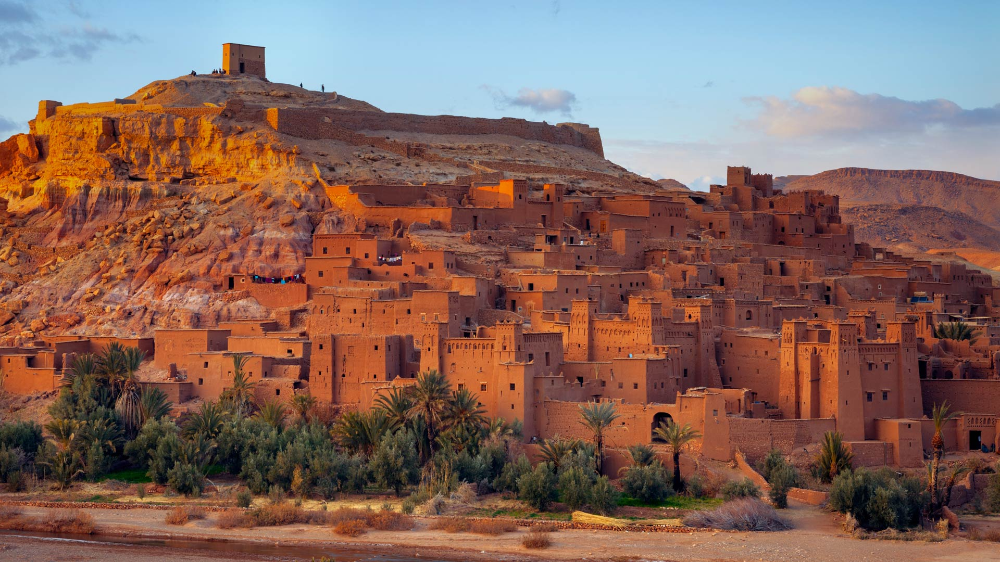
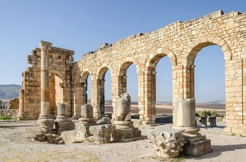
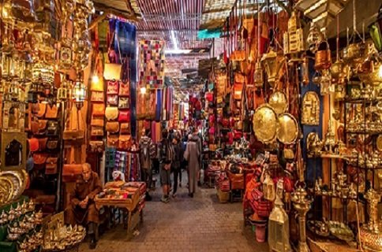
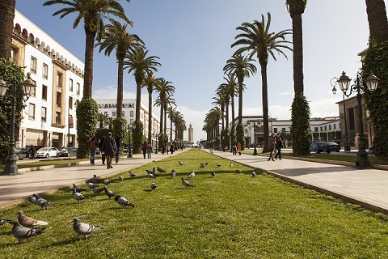

À la croisée de l'Europe et de l'Afrique, bordé par les eaux de la Méditerranée et ouvrant sur les immensités de l'Atlantique, le Maroc est un carrefour. Il est le "pays du couchant lointain", une destination riche de contrastes, à l'histoire deux fois millénaire et qui invite à la découverte.
Dans ces terres où convergent les influences, vous découvrirez les vestiges des plus grandes civilisations méditerranéennes : au nord du pays se dressent les ruines romaines de Volubilis ; à Rabat, ce sont certains morceaux d'architecture qui témoignent de l'ancienne présence française. Partout ailleurs, dispersés, les trésors des civilisations musulmanes s'offrent à votre curiosité : là, la Kasbah des Oudayas ; ici, les étendues verdoyantes des jardins de la Ménara ; dans tous le pays, des exemples de la libéralité des dynasties qui s'y sont succédées.

Le Maroc est un pays multi millénaire, l'héritier de siècles de tradition. Rien de figé pourtant dans le royaume ! La culture y est vivante, s'incarne au jour le jour dans les petits gestes du quotidien,dans les fêtes, les rituels ou simplement les habitudes de tous les jours. Séjournez-y quelques temps et imprégnez-vous de cette douceur, de cet art de vivre.
Le mieux est de vous promener dans les villes et les villages, dans les ruelles étroites des vieux quartiers. Vous êtes au plus près des populations, échangez avec elles. Vous serez certainement invité à partager un verre de thé avec un marocain : hospitalité et cérémonial seront au rendez-vous.
Découvrez aussi tout un quotidien. La Maroc et ses habitants évoluent au rythme de l'art de vivre méditerranéen reconnu par l'UNESCO. C'est un ensemble de pratiques et de plats, de symboliques qui font l'agrément de tous les jours et qui vous enchanteront.
La fête est aussi à l'honneur dans le royaume. Elle rythme les années. On se réunit lors de fameux moussem, des manifestations religieuses et festives. Ne manquez pas celui de Tan-Tan, particulièrement réputé et inscrit depuis 2008 au patrimoine culturel et immatériel de l'humanité. Découvrez aussi le festival des Gnaouas d'Essaouira. Toutes ces manifestations sont pour vous l'occasion de prendre contact, de vivre auprès des différentes cultures qui font la diversité et toute la richesse du Maroc.
Ça n'est là qu'un tout petit aperçu des cultures vivant encore au Maroc. Sillonnez le pays à la découverte de ces petits trésors du patrimoine immatériel !

Le Maroc est un pays résolument tourné vers l'avenir qui a su conserver ses traditions et faire prospérer son héritage culturel, en les valorisant comme leviers de développement. La ville de Marrakech en est un parfait exemple : le quartier de la Médina et ses souks conservent un charme d'antan incomparable, tandis que Guéliz et Hivernage proposent les installations et infrastructures les plus modernes. Loin d'être antagonistes, l'association de la modernité et de la tradition incarne la véritable force du Maroc.
En tant que visiteurs, vous pourrez ainsi bénéficier de tous les avantages et plaisirs de la modernité. En terme d'hébergement, le Maroc accueille une myriade d'hôtels pour toutes les bourses issues de grands groupes internationaux, mais aussi les plus grandes enseignes de prêt-à-porter ; qui profitent du cadre d'installation idéal d'un pays en plein développement.
Le Maroc cherche également à éviter les travers de la modernité, notamment en matière environnementale en faisant la promotion d'un tourisme responsable vis à vis de la terre et des populations locales. Créateur d'une charte du tourisme responsable et hôte de la COP22, le Maroc est en première ligne pour préserver notre planète.
